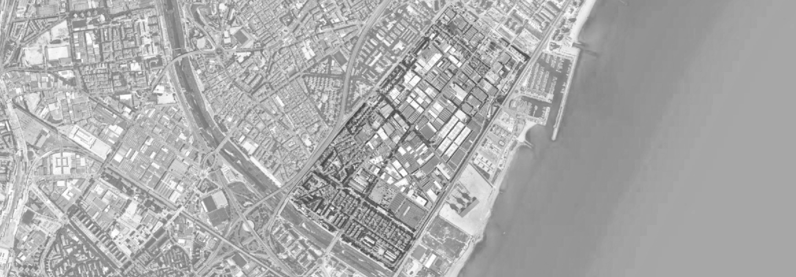
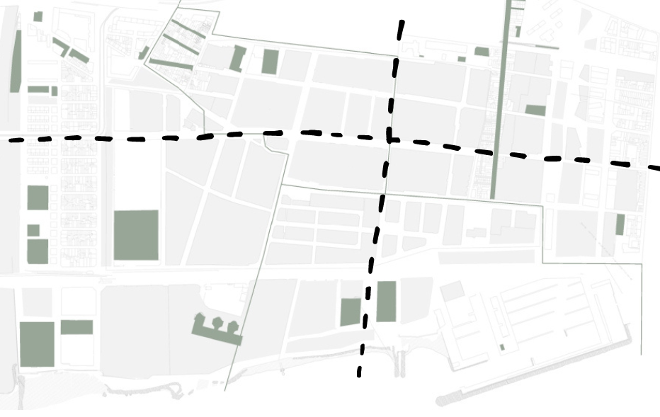
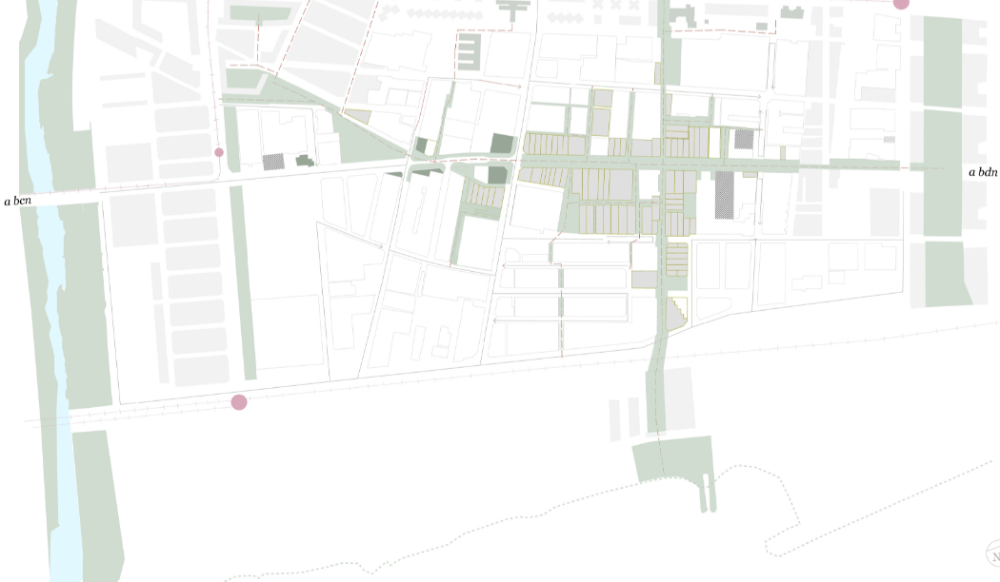
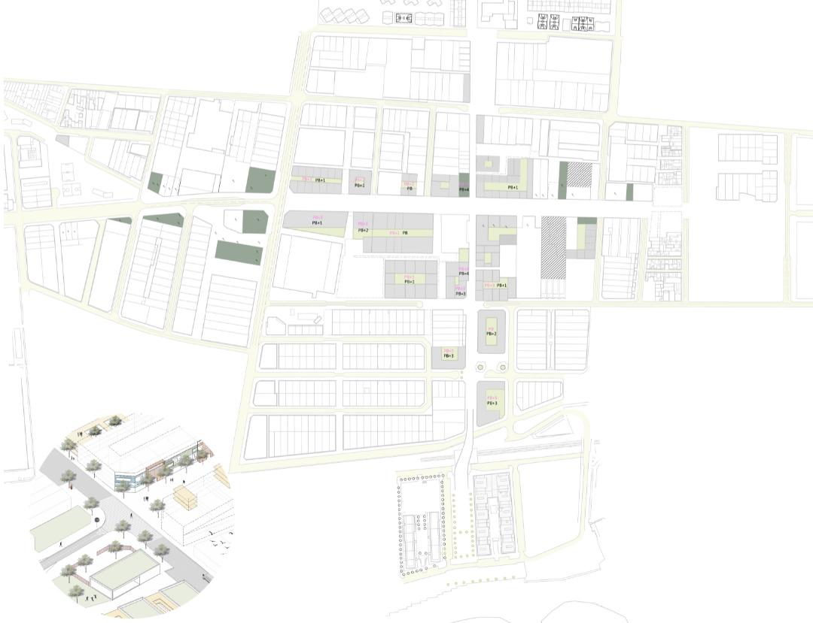
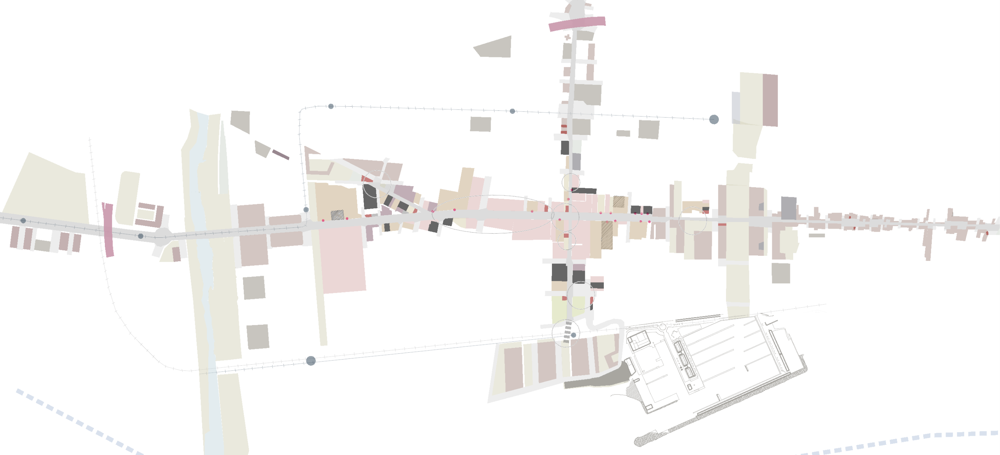
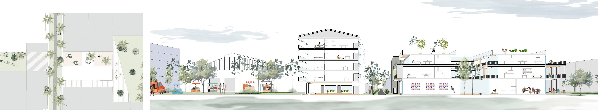
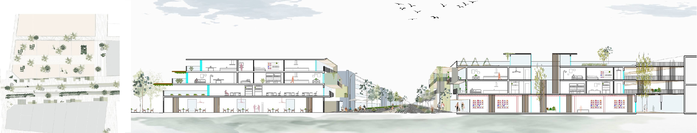
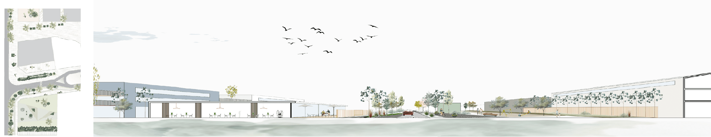

Conectar para revivir
REHABILITACIÓN URBANA EN SANT ADRIÀ DEL BESÓS
Keywords: urbanismo, industria, movilidad
El proyecto consistía en abordar la desconexión existente entre los barrios de Sant Adrià del Besós debido a la frontera que crea el sector industrial. Además, la presencia de carreteras y calles muy transitadas limitan el tránsito peatonal y provocan una zonificación dentro del área industrial de las diferentes actividades económicas. A pesar de ser una zona costera, está visual y físicamente desconectada de ella. Estas condiciones no sólo expulsan a los vecinos, sino que fomentan la delincuencia y la inseguridad en las calles.

El objetivo para este proyecto era restablecer la conexión entre las zonas rehabilitando dos calles principales e incorporando viviendas y nuevos equipamientos públicos a lo largo de estos dos ejes. Elegimos estos dos ejes por su importancia, ya que no sólo atraviesan los cuatro municipios de Sant Adrià del Besós, sino que lo conectan con Barcelona y el Maresme en sentido longitudinal y con el mar y la montaña en sentido transversal.


La actuación consiste en peatonalizar las calles principales mediante plataformas únicas o ampliación de aceras para redistribuir el tráfico. Esto permite la aparición de dos corredores verdes a lo largo de los cuales se van incorporando plazas, parques y equipamientos públicos que des-zonifican el barrio.


Se introduce la vivienda en aquellas naves abandonadas donde la actividad económica existente, el entorno ambiental y las condiciones materiales actuales lo permitan para crear un público potencial que dote de vida el interior industrial. Debido a la profundidad de las naves actuales se realizan patios interiores en las nuevas viviendas para garantir el acceso de luz y la salubridad. Estos patios se aprovechan para incorporar vegetación y espacio público, lo cual genera actividad humana en perpendicular a los ejes principales, expandiendo su efecto. De esta manera se reestablece la conexión de las cuatro zonas centrales de los barrios se incorporan nuevas centralidades y se mantiene la actividad económica existente.


